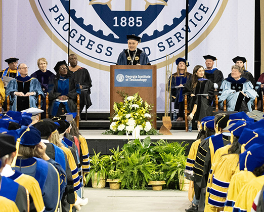
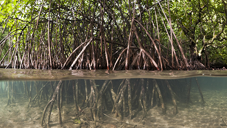
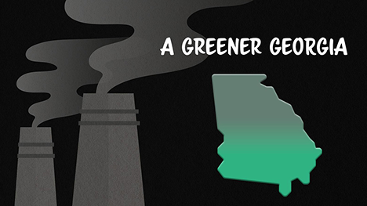
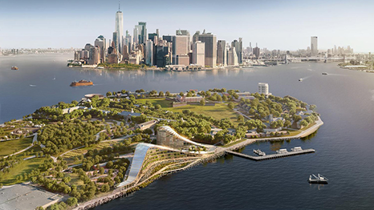

To grow and mobilize Georgia Tech's knowledge assets to create a sustainable future for all.
[ ABOUT BBISS ]
Scroll
Brook Byers Institute for Sustainable Systems
[ 01 — ABOUT ]
Who is BBISS?
The Brook Byers Institute for Sustainable Systems (BBISS) at Georgia Tech advances interdisciplinary sustainability research and education to create a more sustainable future. As a key partner in Georgia Tech's Sustainability Next 2023–2030 Strategic Plan, it connects researchers across disciplines to address global challenges and advance the UN Sustainable Development Goals. Its work focuses on climate science, environmental health, sustainable cities, resource use, equitable development, and sustainability economics. Through research, leadership development, and strategic partnerships, BBISS translates knowledge into practical solutions that benefit society.

To catalyze high-impact research, develop future leaders, and foster partnerships that translate knowledge into practice.
[ 02 — FOCUS AREAS ]
What we work on
-
Understanding how a changing climate reshapes the Southeast, from heat to sea-level rise.
-
How air, water and the built environment affect the health of communities.
-
Infrastructure, mobility and land use for cities that work for everyone who lives in them.
-
Energy, water and materials, used efficiently and kept in circulation.
-
Making sure the benefits of sustainability reach the communities that need them most.
-
Markets, policy and finance that make sustainable choices the practical choice.
[ 03 — RESEARCH ]
Climate impacts research

Climate Change Through Coastal Ecosystems
[ 01 ]Mitigating Climate Change Through Restoration of Coastal Ecosystems
Researchers at the Georgia Institute of Technology and Yale University are proposing a novel pathway through which coastal ecosystem restoration can permanently capture carbon dioxide from the atmosphere.
Learn more
A Greener Georgia
[ 02 ]Georgia emissions declining
Georgia's overall greenhouse gases have decreased. The decline in emissions comes against a 10% expansion in the state's economy, showing the potential for reducing emissions while pursuing economic growth, according to the team.
Learn more
Georgia Tech Partner with Institution for World-Leading Climate Center
[ 03 ]Georgia Tech Chosen as Partner Institution for World-Leading Climate Center
Georgia Tech will be a key partner for the New York Climate Exchange (The Exchange), a first-of-its-kind international center for developing and deploying dynamic solutions to the global climate crisis.
Learn moreDriving Change
[ 04 ]Georgia Tech Experts Lead in Electrification of America’s Roads
Through research and development, policy, and collaboration, Tech experts are working toward finding solutions that will serve as catalysts during this transitionary period for the environment and the way Americans drive.
Learn more
[ 04 — WATCH ]